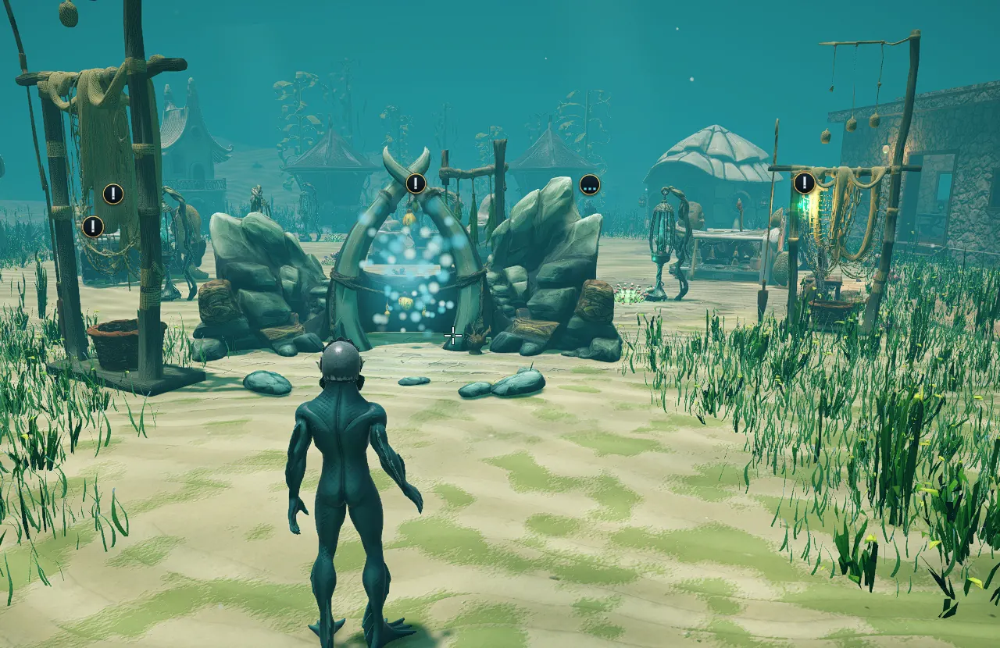
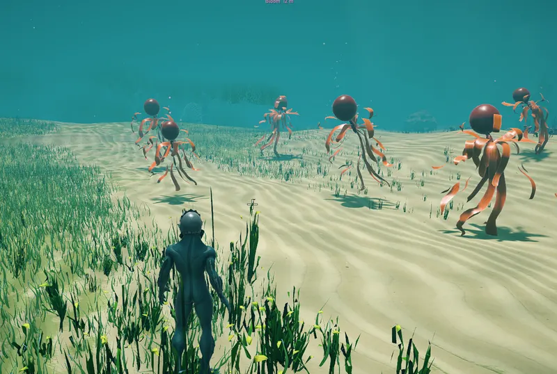
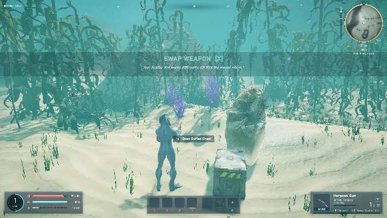
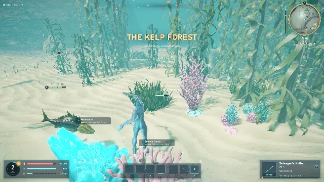

Swim the whole ocean
One open sea you can swim and walk through, from sunlit sand to kelp forests and glowing caves. Diving is how you move, fight and escape.

An underwater online game. Humans and fishmen share one ocean, push ever deeper, and slowly learn the abyss holds something older than either of them.
The story so far
The surface died generations ago. People live below the waves now, in sealed domes and reef cities. Dyrhald was one of the few places where humans and fishmen lived side by side, until a blight rose from the deep and swallowed it.
You are one of its survivors, with no memory of the last night. Dead water is creeping upward, the reefs are bleaching, and every species blames another. The only way to the truth is down.

What you do
Each dive is a loop: head out, fight, gather what the sea gives you, come home, upgrade. The long goal is the next depth, where the water gets darker, colder and stranger.
One open sea you can swim and walk through, from sunlit sand to kelp forests and glowing caves. Diving is how you move, fight and escape.

Harpoon guns, nail guns, scatter nets, gill shooters, spears, tridents and hammers. Swing, block, and land hits you can read.

No loot shower. Whatever you hunt, you carve by hand for scale, fang, meat and chitin, and better materials make better gear.

Glowcoral, kelp, copper and iron ore. Every item has a quality and every material a rarity, from coral tools up through copper, bronze, iron and steel.

A home base under the sea, with a forge, workbench, storage and a trophy wall. Sell from home, and set your hearth to wake there if you're knocked out.

Named rare creatures in their lairs, fish migrations, predator frenzies, kelp blooms, and cultist raids on the town of Saltreach. Defend it, or don't.
Two species, one ocean
Human divers survive on what they build: rebreathers, lamps, wetsuits and dive kit that grow with them. Their power lives in their gear.
Fishmen change their own bodies. Low-light eyes, deeper gills, pressure bladders: permanent adaptations with a cost.
Both species play together in the same world. The species changes how you see the story, not who you can group with.
Meet the species
Latest news
Dyrhald is in a small, early alpha with friends and family. It's rough, it changes every week, and your bug reports shape it.